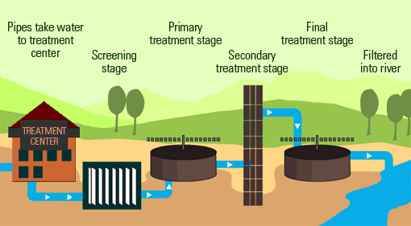

Liquid Waste (Sewage/Wastewater) Treatment:
Wastewater (liquid waste) from flushing the toilet, bathing, washing sinks and general cleaning goes down the drain and into a pipe, which joins a larger sewer pipe under the road. The larger pipe also joins a major pipe that leads to the treatment center.

 STAGE ONE: SCREENING
STAGE ONE: SCREENING
Screening is first stage of the wastewater treatment process. Screening removes large objects like, diapers, nappies, sanitary items, cotton buds, face wipes and even broken bottles, bottle tops, plastics and rags that may block or damage equipment.
Special equipment is also used to remove grit that gets washed into the sewer.
STAGE TWO: PRIMARY TREATMENT
This involve the separation of organic solid matter (or human waste) from the wastewater. This is done by putting the wastewater into large settlement tanks for the solids to sink to the bottom of the tank. The settled solids are called ‘sludge’. At the bottom of these circular tanks, large scrappers continuously scrape the floor of the tank and push the sludge towards the center where it is pumped away for further treatment. The rest of the water is then moved to the Secondary treatment.
STAGE THREE: SECONDARY TREATMENT
The water, at this stage is put into large rectangular tanks. These are called aeration lanes. Air is pumped into the water to encourage bacteria to breakdown the tiny bits of sludge that escaped the sludge scrapping process.
STAGE FOUR: FINAL TREATMENT
Next the ‘almost’ treated wastewater is passed through a settlement tank. Here, more sludge is formed at the bottom of the tank from the settling of the bacterial action. Again, the sludge is scrapped and collected for treatment. The water at this stage is almost free from harmless substances and chemicals. The water is allowed to flow over a wall where it is filtered through a bed of sand to remove any additional particles.
The filtered water is then released into the river.